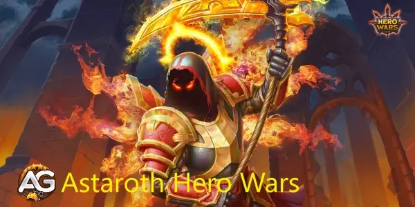
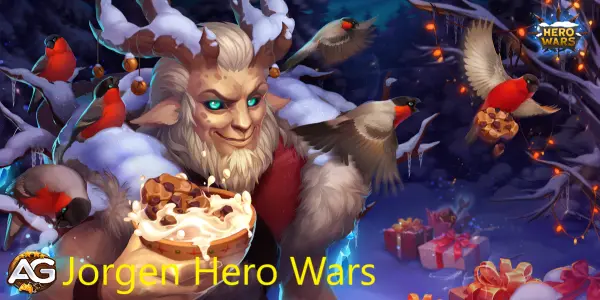

Astaroth - Hero Wars
Sua resistência é inigualável, e sua habilidade de absorver dano o torna...

Jorgen Hero Wars
Sua principal função é controlar o campo de batalha, evitando que os inimigos...

Sem Rosto - Hero Wars
Embora Sem Rosto seja uma força formidável por si só, seu verdadeiro...